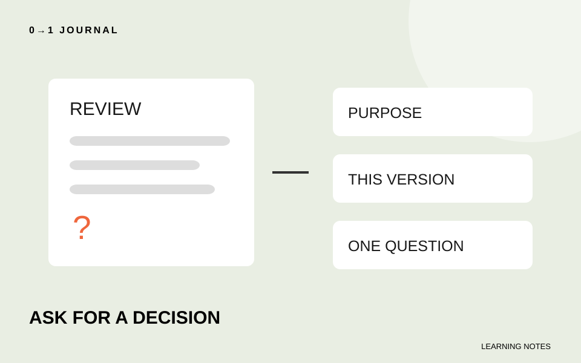

「サイトを作ったので見てください」と頼んだのに、知りたかったことへの返事がない。レビューで見てほしい点を伝えるには、作品に加えて、今回どの判断を手伝ってほしいかを渡します。
ここでいうレビューは、制作物を見てもらい、改善点を確かめることです。架空の家具工房の見学会ページを題材に、練習相手へ渡す依頼文を作ります。実際の講師や受講生のやり取りではありません。
作品の目的を、見る人の行動で説明する
冒頭は「初めて来る人が集合場所を確認できる案内です」とします。「おしゃれなサイトです」では、相手は配色や写真の感想を求められたのかもしれません。今回の目的を先に伝えると、質問の対象が定まります。
ただし、答えを誘導する説明は避けます。「この大きな案内で分かりやすくしました」と書く前に、実際に見つけてもらいたい情報を示してください。自分が期待する評価より、相手に試してほしい読み方を渡しましょう。
制作全体の目的が決まっていない場合は、最初のホームページで決めることを先に整理できます。依頼文では、そのうち今回の確認に必要な一文だけを使います。
見る版と、見てほしい範囲を特定する
ページの場所に加えて、どの版かを書きます。複数案があるなら「集合場所を上に置いた案A」のように区別してください。相手が見る途中で内容を変えた場合は、返事がどの版に対するものか確認が必要になります。
「全体をお願いします」から始めず、「集合場所の説明と、その直前の見出しを見てほしい」と範囲を区切ります。写真を未調整のまま出すなら、その状態も伝えます。ただし未完成という理由で、目的を妨げる問題まで評価対象から外さないようにします。
リンクを渡す前には、相手が開ける場所か、自分が共有してよい内容かを確認してください。練習では個人情報や実際の申込者のデータを使う必要はありません。公開範囲を広げることと、レビューを頼むことは別の判断です。
好みを尋ねる質問を、確かめられる問いに変える
「見やすいですか」だけでは、相手の見た場所や基準が分かりません。この例では「集合する入口を、ページ内の説明から答えてください。迷った場合は、どこを読み直しましたか」と尋ねます。
二案の比較なら、違いを一つに絞ります。案Aと案Bで写真も色も文章も変えると、集合場所の位置を比べたのか分からなくなります。順番だけを変え、同じ問いで両案を見てもらう練習にします。
依頼文は例えば次の形です。
架空の工房見学会の案内です。初めて来る人が集合場所を確認できることを目的にしています。案Aの「当日の集合」を読み、集合する入口を答えてください。迷った説明があれば、その箇所も知りたいです。今回は写真の選定は確認範囲に含めていません。
これは記入例です。相手の返答を先に想像して、実際に検証できた成果として記録しないでください。
15分を目安に、一問だけの依頼文を作る
手元の作品を一つ選び、目的、対象の版、確認する場所、答えてほしい問いを書きます。依頼文だけを読み返し、別の人が何を開いて何を試せばよいかを確認しましょう。
完成物は送信前の依頼文です。相手と確認時間を調整したうえで頼み、返事では「実際に起きたこと」と「改善案」を分けて受け取ります。その後の練習へのつなぎ方は、フィードバックを課題へ変える記事で扱っています。無料レッスンで作ったページも、この依頼文の題材にできます。
記載内容へのご質問や訂正のご連絡は、hello@junkbranding.comまでお願いします。